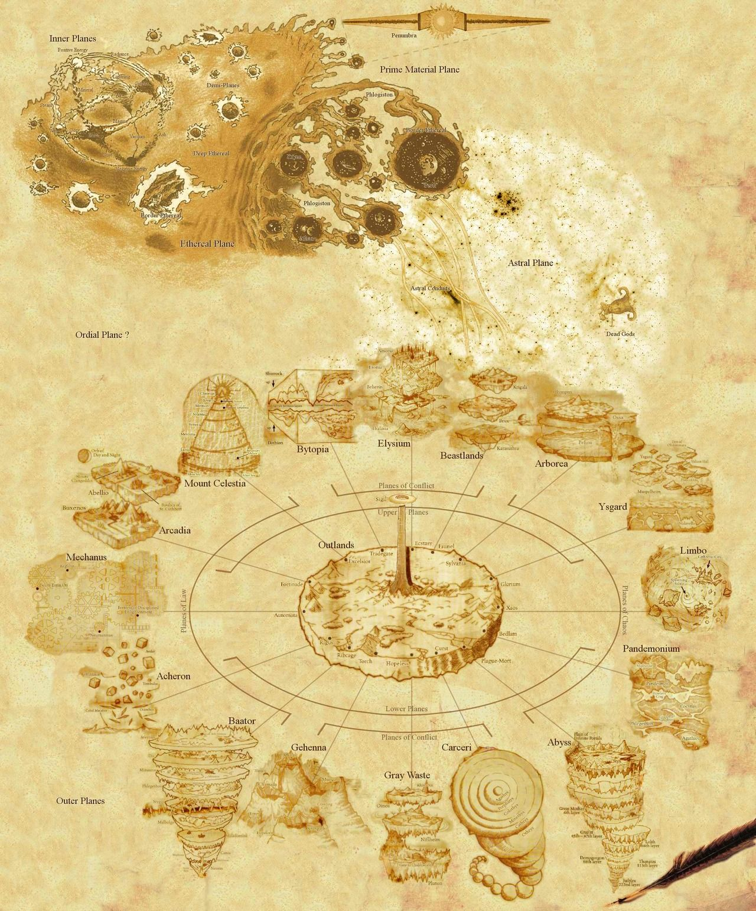

Hover over a plane to reveal the campaigns tied to it.

The central material plane of Infinitum.
Time period : Medieval
Relatively isolated from the other material planes.
Time period : Victorian
Vecna's home brought out from the depths of the elemental chaos
Endless swirling maelstrom of raw elemental energy that held the abyss prisoner
The once orderly and peaceful realm of Asmodeus